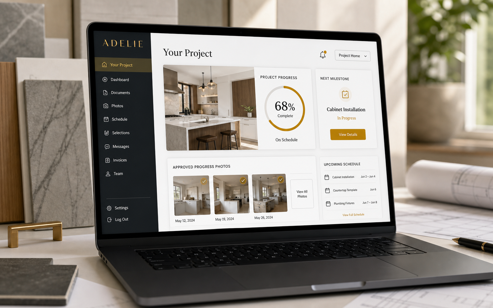
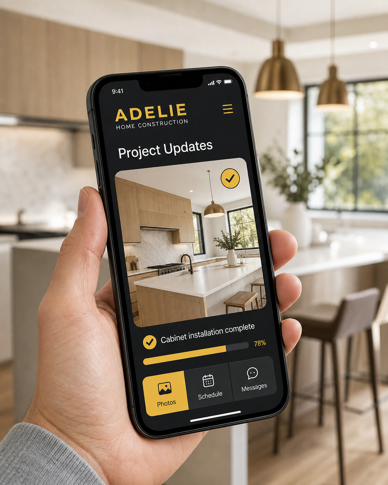

Progress at a glance
See the current phase, recent updates and the next important milestone from your project home screen.
Included With Your ADELIE Project
The ADELIE Customer Portal gives you one organized place to follow progress, view approved jobsite photos, check upcoming work and stay connected with your project team.
Portal visuals show fictional demonstration content. Available tools may vary by project.

Clear updates • One project record • Private customer access • Desktop and mobile friendly
Clarity Between Walkthroughs
You should not have to search through text threads and email chains to understand what is happening in your home.
See the current phase, recent updates and the next important milestone from your project home screen.
Follow visible progress through photos and notes reviewed by the ADELIE team before they appear in your portal.
Review upcoming tasks, milestones and important dates without piecing together separate messages.
Keep relevant project files and records available in one familiar place throughout the build.
Stay oriented around material choices and project decisions as the work moves forward.
Send and review project messages in the same space where you follow the work.

Wherever the Day Takes You
Open your portal from a phone, tablet or computer to see the latest customer-ready information. It is designed to make communication easier—not add another complicated system to manage.
Built Around Transparency
A remodeling portal cannot replace thoughtful project management, but it can make good communication easier to follow. ADELIE combines the portal with direct conversations, documented decisions and a clear construction process.
Read the ADELIE Promise →More Than a Finished Space
Tell us what you are planning and learn how ADELIE can organize the path from first conversation to final walkthrough.